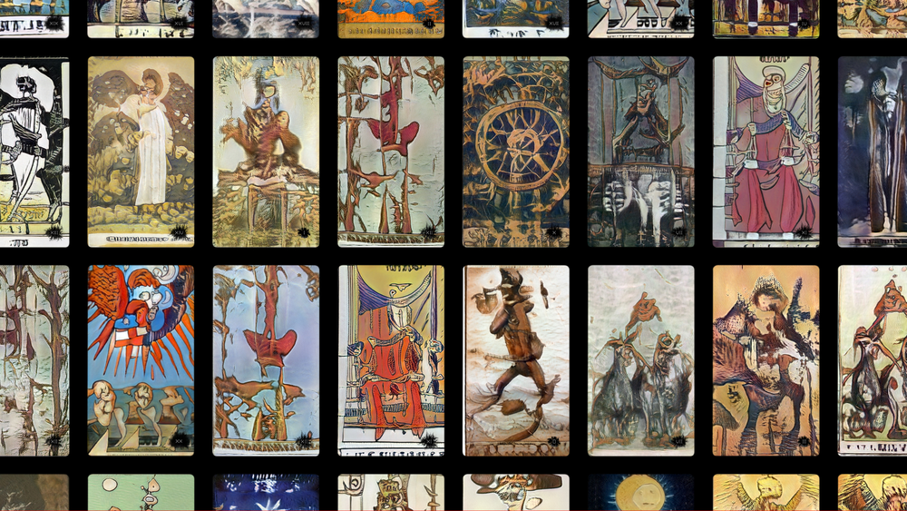
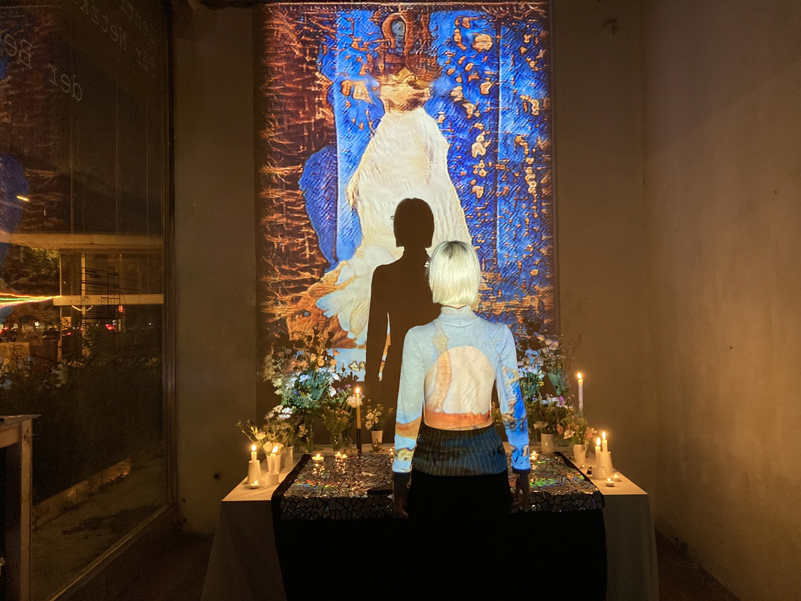
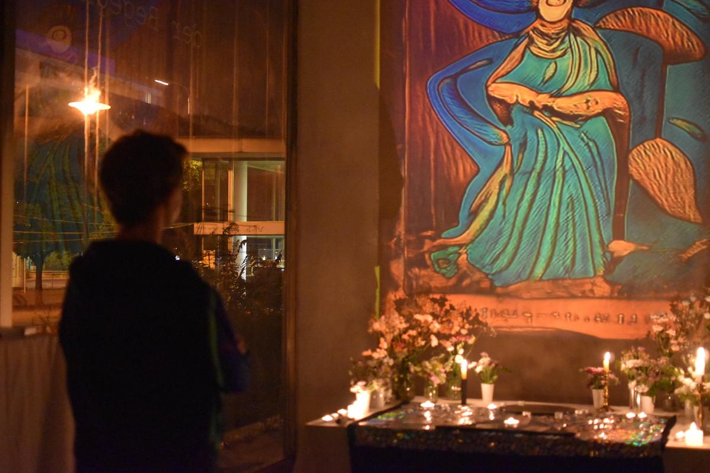
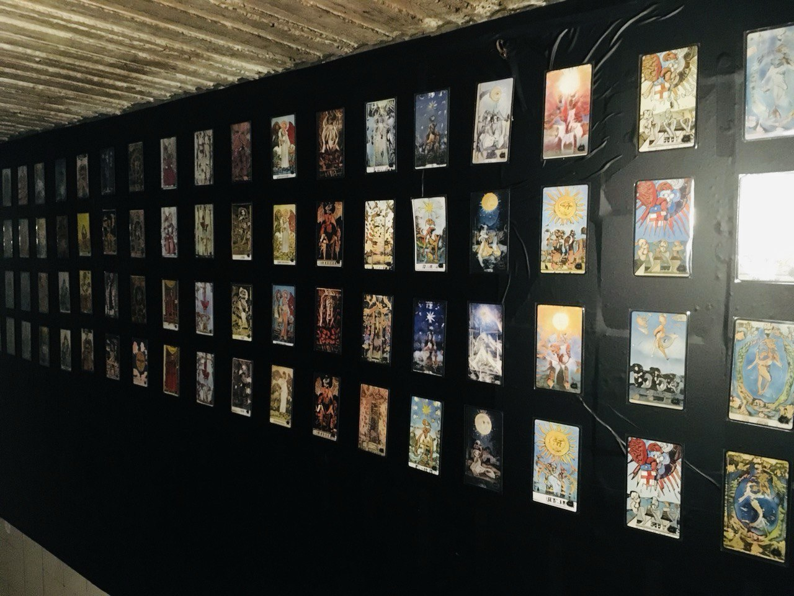

Tarot of the Latent Spaces
Collaboration with Karin Valis
The Tarot of the Latent Spaces is a card deck aiming to represent the sacred symbolism of the Tarot using generative adversarial networks. As Tarot practitioners, we acknowledge the potential of machine learning to discover new narratives in the tarological archetypes - if approached with care and respect towards this mystical tool. Our intention is to introduce a new way of appreciating the Tarot in its fullness, rather than merely produce an artwork from its cultural residue.
Each tarot deck uses its own imagery and a different symbolic language to describe the archetypal meaning of the card. In machine learning, the “latent space” is a form of continuous mapping between the real world and the model’s understanding of it. By navigating the latent spaces generated from a dataset of Tarot designs for each Arcanum, we can find an infinite number of images which are visually unique - yet semantically alike. Such images are interpolations between the symbolisms of the orginal card designs, finding new, previously unexplored representations. Using this technique, we play with the object of the Tarot deck, giving up precise control over the cards’ appearance and making each produced deck a unique gaze upon the Arcana and their underlying archetypal structure.
As well as providing a novel method of interpreting / understanding the tarot based on new technology, and offering an example of how new technologies can be usefully incorporated into traditional spiritual practices such as the Tarot, this work also aims to draw a critical comparison between machine learning / AI technology and more traditional or esoteric forms of divination, calling into question the supposed scientific objectivity of machine learning systems.
The ToLS deck was presented in 2021 in a special video installation “Readings from the Latent Spaces” in the Zentrum für Netzkunst space in Haus der Statistik, Berlin. Groups of visitors were presented with a unique version of the installation based on the cards they drew before entering.
The printed version of ToLS was exhibited at the LORE exhibition as part of Vorspiel Berlin 2022. In the Gelegenheiten art space, in a former butcher's basement, we exhibited the entire deck on a vast wall.
